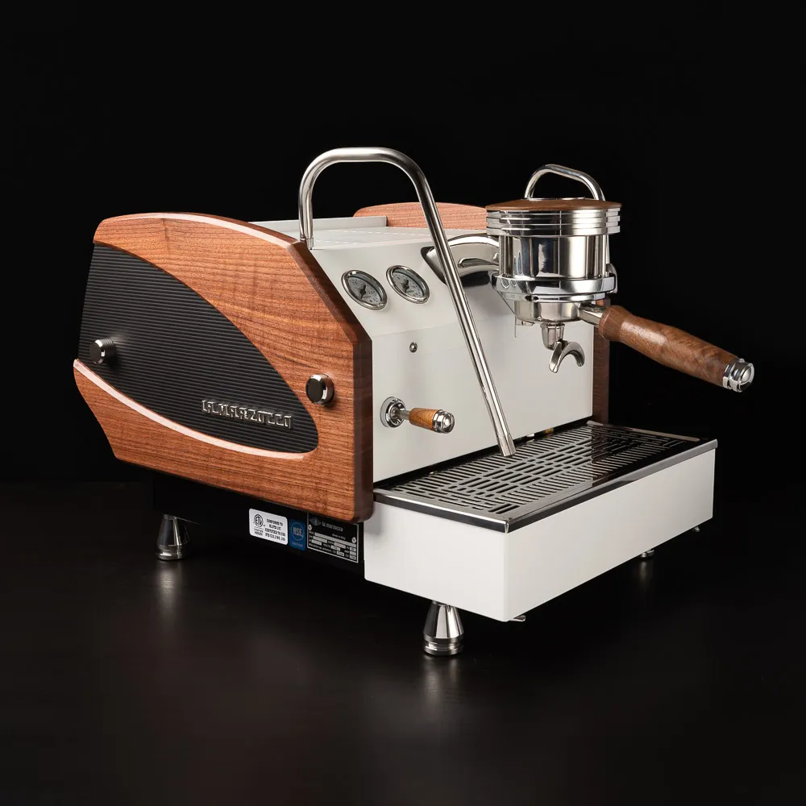
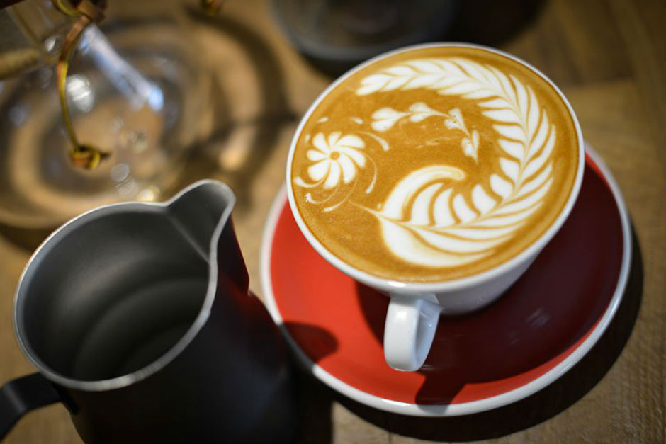

UNESCO tarafından korunan Viyana Kahve kültürünün, Türk coğrafyasıyla bağlantılı olduğunu ilk öğrendiğimizde çok heyecanlanmıştık. Türklerden onlara miras kalan kahve çekirdeklerini, çeşitli yöntemlerle demleyip, yanında muhteşem tatlar ile sundular, sonra bunu Türk misafirperverliği ile harmanladılar. Bu konseptin kokusu önce Viyana’yı sonra tüm Avrupa’yı sardı. Biz de buradan esinlenerek, işin içine köklü Türk damak tadı, çikolata ve nitelikli kahveyi de entegre ederek bu topraklardan başlayan bu hikayeyi, başladığı yere geri getirdik.
 